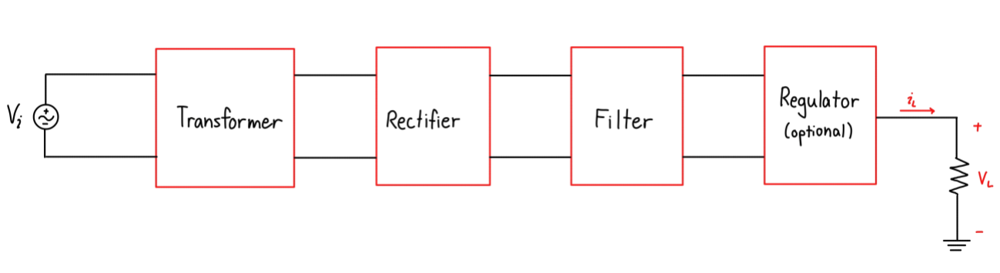

Project Overview
An AC-to-DC converter transforms alternating current (AC) from a source into direct current (DC), required by most electronic devices. This project’s objective was to design and build a DC power supply capable of delivering 10 mA at 3 V ± 0.1 V from a 120 V (rms), 1 kHz source. Core stages include a transformer (or direct AD3 source), a center-tapped full-wave rectifier, a filter capacitor, and a load resistor.
The major design requirement: output 3 V ± 0.1 V at 10 mA. Secondary requirements include maintaining ripple under 0.2 V p-p and ensuring component availability (e.g., 330 Ω resistor vs. ideal 300 Ω).
